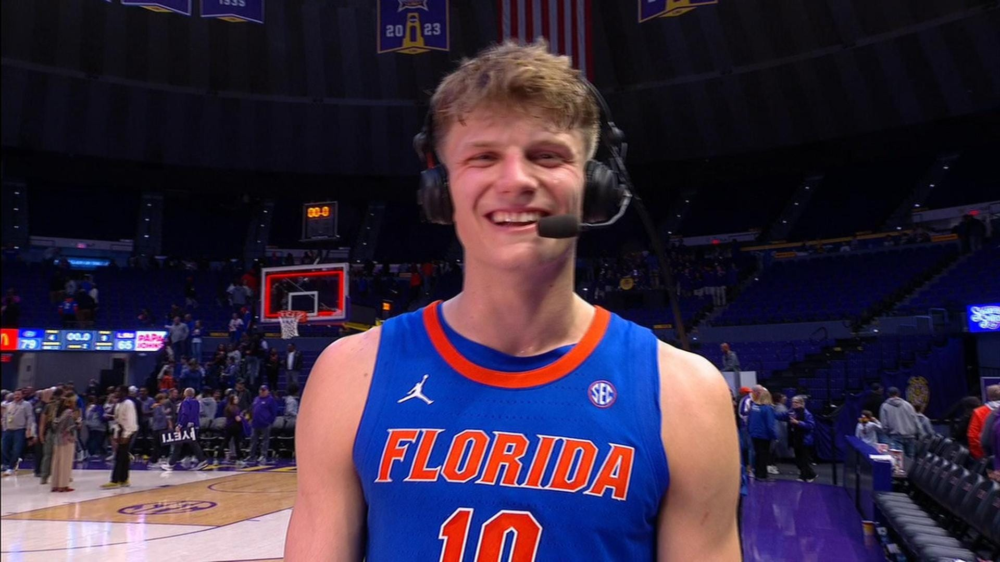
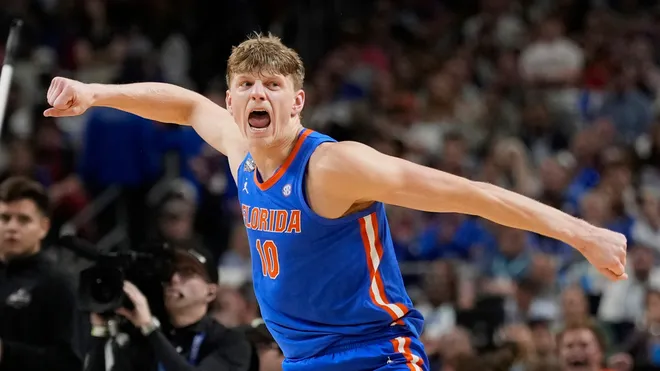

Thomas Haugh
This is Thomas Haugh. He was born on July 7th, 2003 and raised in New Oxford, Pennsylvania. Growing up Haugh played football, basketball, and volleyball. He started his high school career at New Oxford High School. He then transferred to Perkiomen School(Same state tournament as my school!) and led them to their first state championship in 2023. After high school he committed to play basketball for the Florida Gators. Haugh showed a promising uprise in his freshmen season at Florida with some very remarkable performances. The following year in Febuary 2025 he helped the Gators defeat #1 Auburn. In the following game against #22 Mississipi State Bulldogs Haugh had 16 points, 9 rebounds, 8 assists, 2 steals and blocks. He was the first SEC player to record 15+ points, 8+ rebound, 8+ assists and multiple blocks and steals sine John Wall in 2010.
Some of Haugh's accomplishments include :
- West Region's All Tournament Team(2025)
- SEC Tournament Title (2025)
- NCAA Tournaments Title(2025)
Actually A Pennsylvania native, we love you thomas ❤️❤️